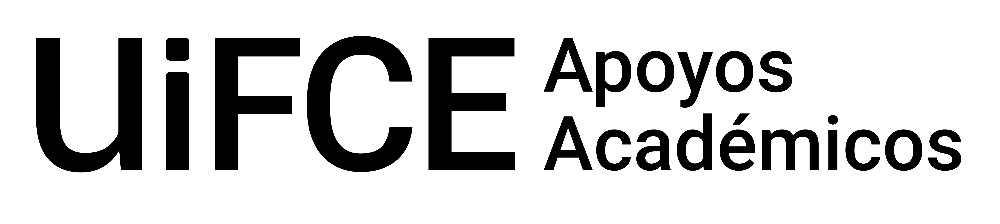
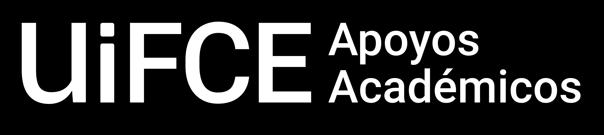

Manual de marca
Un sistema, siete áreas
El logo UIFCE se conserva intacto. Cada área se identifica con su nombre a la derecha del logotipo, en Roboto Medium y en dos líneas cuya altura total es igual a la altura de las mayúsculas del logotipo.
1 · Logo de la Unidad
UIFCE
El logotipo combina la «u» de Roboto Regular, la «i» dibujada (punto redondeado y fuste) y «FCE» en Roboto Medium. El descriptor «Unidad de Informática / de la Facultad de Ciencias Económicas» acompaña al logo de la Unidad, no a los de las áreas.


2 · Sistema de áreas
Variantes de color

uifce-<área>-azul
uifce-<área>-blanco
uifce-<área>-negro-fondo-blanco
uifce-<área>-blanco-fondo-negroTodas las áreas


3 · Color
Paleta
#49689FColor principal del sistema de áreas. Logos, títulos y botones.
#262E6BFondos institucionales, textos de alto contraste y pie de página.
#C1C6E4Fondo de las animaciones y del logo original. Superficies suaves.
#EEF0F9Fondos de secciones y tarjetas.
#F5C518Solo acentos de campaña (llamados a la acción, etiquetas). Nunca en el logo.
#FFFFFFLogo sobre fondos oscuros, lavanda o fotografía.
4 · Tipografía
Roboto
Roboto Medium — nombres de área y títulos
Roboto Regular — textos y descriptores
Roboto Light — textos de apoyo en tamaños grandes
Disponible gratis en Google Fonts. En piezas de campaña se puede usar una tipografía de apoyo, pero los logos siempre conservan Roboto.
5 · Área de protección y tamaño mínimo
Espacio alrededor
Deja alrededor del logo un espacio libre igual a la altura de la «F» del logotipo. Ningún texto, borde o imagen debe entrar en esa zona.
Tamaño mínimo: 120 px de ancho en pantalla y 30 mm en impresión para los logos de área; por debajo de ese tamaño usa solo el logo UIFCE.
6 · Usos incorrectos
Qué no hacer
No deformes ni estires el logo.
No cambies los colores fuera de la paleta.
No pongas el logo azul sobre fondos oscuros o de bajo contraste.
No lo rotes ni le agregues efectos.
7 · Movimiento
Animaciones y ruletas
Cada área tiene dos animaciones: la animación de su logo y la ruleta, en la que los nombres de las áreas giran junto al logotipo hasta detenerse en el área. Úsalas como entrada o cierre de videos, en pantallas y en redes.
| Archivo | Uso |
|---|---|
.mp4 (lavanda, fondo blanco, fondo negro) | Pantallas, presentaciones, redes sociales |
-transparente.webm | Web y OBS, con fondo transparente |
.gif / -transparente.webp | Correos, chats y firmas |
-transparente.mov (ProRes 4444) | Edición en Premiere, Final Cut o DaVinci. No está en el repositorio por su peso; se genera con npm run render:reel. |